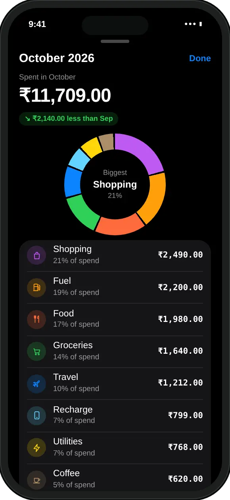

What can I ask about my spending?
Questions about any month: where the money went, one category, two months side by side, a single merchant, your limits, and what is left after fixed costs.
- Where it went. “Where did my money go this month?” or “How much did I spend on food?”
- Month against month. “Compare this month to last month” or “Why did I spend more than last month?”
- One merchant. “How much have I spent at Swiggy?” finds the matching entries and their total.
- Limits and cards. “How much room is left in my budget?” checks this month's limits and how much of each card limit is used.
- The bigger picture. Income, savings, and how much is already spoken for by EMIs and SIPs in a month.
It understands “this month” and “last month”, and the Hinglish “iss mahine” and “pichle mahine”. It also knows your own categories, so if you made one called Parents, “parents ka kharcha” works too.

How do I ask MoneyOS a question?
Open the Ask tab, type a question or tap an example, and read the answer. Five steps:
- Open the Ask tab. Tap Ask, the sparkle in the middle of the tab bar.
- Pick or type a question. Tap one of the example questions, or type your own in the box that says Ask about your money.
- Watch it look things up. A short line such as Looking at your month or Checking category spends shows which part of your ledger it is reading.
- Read the answer. The reply comes back in two sentences or fewer, with every amount taken from your own entries.
- Ask a follow-up. Keep going in the same chat. Suggestion chips under the conversation offer the next question.
Before you ask anything, the Ask tab can show up to three insight cards about your month, such as your top category or how you are pacing. Tap one and its question is put in the box for you. Tapping an insight in Stats takes you straight to Ask with that question.
The chat remembers the last few questions, so “and last month?” works as a follow-up. After a handful of exchanges it starts fresh, shown by a small New conversation line.
Can I trust the numbers in the answer?
Yes, because the AI never works them out. It looks them up with the app's own tools, which add up your entries, and repeats what they return.
Language models are good with words and unreliable with sums. So MoneyOS splits the job. The model is told it has no memory of your transactions and must never invent, estimate or compute an amount. For every question it picks one lookup: spending by category, compare two months, the month's income and savings, find a merchant, or check your limits. The app runs that lookup on your ledger and hands back the result, and the model only phrases it. That is why the Ask screen says the AI narrates and never does the maths.
If the on-device model cannot be reached, you get a message saying so instead of a guess. For the maths behind a healthy month, see how to work out a safe daily spending limit, and for fixed costs, how to track EMIs alongside daily spends.
Can I add an expense by asking?
Yes, if you ask directly and say the amount, like “Add 200 for coffee”. It saves the expense and tells you the amount and category it used.
- An amount is required. If you do not say one, it asks you instead of guessing.
- What-ifs are never saved. “What if I add 5000 to food”, “can I afford a 20000 phone” or “how do I add an expense” get an answer, and the app also checks the wording itself before anything is written.
- Repeats are caught. If the same expense was logged in the last 90 seconds, nothing is added and it tells you so.
- EMIs and SIPs are matched. If the amount is exactly one of this month's EMIs or SIPs, the payment is linked to it and that EMI or SIP is marked paid.
A spend added this way counts towards your limits right away, including the 80% and 100% alerts from category budgets.
Does my financial data leave the phone?
No. Ask runs on Apple's on-device model, so your question, your entries and the answer all stay on your iPhone.
Many AI features send your data to a server to be processed. Ask does not need to, because Apple Intelligence includes a language model that runs on the phone itself. MoneyOS has no servers, no account and no bank login, so there is nowhere for your spending to go. Ask also only looks at the ledger you have open, so a Business ledger stays out of Personal answers.
Read our privacy policy or why a tracker with no login is safer.

What if my iPhone does not support Apple Intelligence?
The Ask tab shows quick queries instead of the chat. They give the same answers without the model.
Chat needs an iPhone that supports Apple Intelligence, with Apple Intelligence turned on. Without it, you can still tap for this month's or last month's spending by category, compare this month with last month, or search by merchant or category. A note at the top tells you why chat is unavailable: if Apple Intelligence is still downloading, chat unlocks by itself when it is ready, and if it is switched off, you can turn it on in Settings, under Apple Intelligence & Siri. See our introduction to MoneyOS for everything else in the app.
Frequently asked questions
Can I ask questions about my spending on iPhone?
Yes. In MoneyOS, open the Ask tab and type a question such as Where did my money go this month? On an iPhone that supports Apple Intelligence, you get a short answer in plain words, worked out from your own entries.
Does the AI make up the numbers?
No. The model is not allowed to calculate or guess amounts. It calls the app's own tools, which add up your entries, and it repeats the figures they return. If a lookup finds nothing, it says so.
Is my financial data sent to the cloud for AI?
No. MoneyOS uses Apple's on-device model, so the question, your entries and the answer stay on your iPhone. MoneyOS has no servers and no account, and nothing is sent to us.
Can Ask add an expense for me?
Yes, when you ask directly and say an amount, for example Add 200 for coffee. It saves the expense and tells you the amount and category. Questions like what if I add 5000 to food are answered, never saved.
What if my iPhone does not support Apple Intelligence?
The Ask tab shows quick queries instead: spending by category for this month or last month, this month compared with last month, and a search by merchant or category. They give the same answers without the chat.
Is MoneyOS free?
Yes. The whole app is free, with no subscription, no ads and no in-app purchases. There is no account and no bank login.